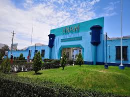

SOBRE NOSOTROS
Somos estudiantes del décimo ciclo de Ingeniería Ambiental en la Universidad Nacional de Moquegua. Esta página fue creada con el propósito de brindar un acceso claro y organizado a la normativa legal relacionada con la Gestión Hídrica en el Perú. Aquí podrás encontrar información esencial sobre leyes, regulaciones y decretos en vigor, cuyo objetivo es la preservación del medio ambiente y la protección de la salud pública.
